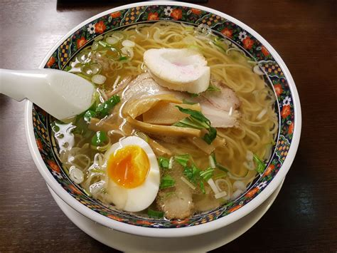

Ramen

A japanese noodle and broth based dish
Ingredients
- fresh spinach leaves (As needed)
- green onions (As needed chopped)
- bamboo shoots (As needed)
- cook egg hard (As needed, optional)
- 1 lb. pork loin (boneless, thinly sliced)
- 1 Tbsp. sweet soy sauce
- 2 Tbsp. soy sauce
- 1 tsp. toasted sesame oil
- 1 tsp. togarashi (Japanese seven spice)
- 2 qt. chicken stock
- 1/4 cup miso paste (dashi)
- 1 qt. pork broth (tonkotsu)
- 1 pkg. ramen noodles (fresh or dried)
- hot chili oil (As needed)
- seasoned rice wine vinegar (As needed)
- furikake rice seasoning (As needed)
- 3 lb. pork ribs (with lots of meat on the bones)
- 1 lb. pork scraps (/trim)
- 1 lb. pork leg bone
- 2 Tbsp. vegetable oil
- 1 onions (large, skin on, rough chopped)
- 12 cloves garlic
- 1 piece fresh ginger root (roughly chopped)
- 2 leeks (each, rough chopped)
- 24 scallions (white parts only, reserve greens and light green parts for garnishing finished soup, optional)
- 8 oz. mushrooms
Instructions
- Add ribs bones with lots of meat and mix well to combine
- . In large stock pot or rondeau, over high heat add vegetable oil and heat to lightly smoking
- Add onions, garlic, and ginger and cook, tossing as needed until deeply charred on most sides
- dd leeks, scallion whites, mushrooms, trim and pork leg bones
- Top bones and pork with cold water
- Bring to a boil over high heat
- Reduce heat to low simmer and cover
- Continue cooking until broth is slightly viscous, approximately 6 to 8 hours (topping up as necessary to keep bones submerged at all times)
- Once broth is ready, cook over high heat until reduced to approximately 3 quarts. (You can freeze any soup you don't use)
- . Strain through a fine mesh strainer into a clean pot and discard solids
- . If you prefer you can strain again through a chinois or a fine mesh strainer lined with several layers of cheese cloth
- one gallon zip lock bag, add pork marinade ingredients and mix together
- rinate for 4 hours to overnight in refrigeration. Can make a day ahead
- a large pot, bring 6 quarts of water to a boil (for ramen noodles)
- sauce pan, add stock, tonkotsu broth, and miso, mix to combine and bring to a boil then turn off the heat
- at a nonstick skillet over high heat
- a single layer, add pork from the marinade one piece at a time, It will cook quickly
- rn each piece over and cook until done, approximately two minutes
- Remove pan from the heat and allow pork to rest
- Add the ramen noodles to the boiling water and cook according to instructions
- . When cooked, immediately remove noodles and equally divide them into four large soup bowls
- . Add a handful of baby spinach leaves on top of noodles
- . Cover each bowl with one fourth of the broth
- . Slice the pork into julienne strips and add one fourth to each bowl